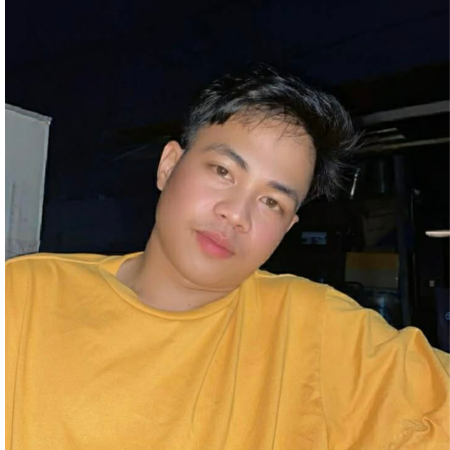
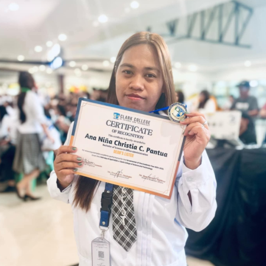

A 2nd year student taking up Bachelor of Science in Office Administration. I am a student passionate about organization and management, but my roots are deeply connected to the earth. I am a hardworking and determined individual who balances my academic life with real-world responsibilities. As a working student, I work as a rider, which has helped me develop discipline, time management, and perseverance. Which allows me also to travel and witness the beauty of different landscapes. Growing up and working in our family farm has taught me the true value of nature and hard work. It is where I learned how life grows and thrives when we take care of our surrounding. I love travelling, as these experiences allow me to explore new places, unwind, and connect with the beauty of nature. Through these, I am inspired to become a responsible individual who values both work and the environment.

A passionate and aspiring webpage designer. I am currently a 2nd year student taking up Bachelor of Science in Office Administration (BSOA). As a designer of this webpage about ENVIRONMENT and NATURE my goal is to create a simple, informative and meaningful platform that raises awareness about the importance of protecting our natural resources. I am also a working mom, and my work inspires me to promote not only health and nutrition but also a clean and safe environment for the community. I love travelling and exploring nature with my husband. These experiences motivate me to advocate for environmental protection and sustainability. Through this webpage, I hope to encourage everyone to take part in caring for our environment and preserving its beauty for future generations.
A 3rd year student from BSOA 3B (Bachelor of Science in Office Administration). I am passionate about personal growth, professionalism, and contributing positively to both workplace culture and the environment. As part of my academic journey, I designed a webpage about Environment and Nature to share my knowledge and raise awareness about their importance in our daily lives. This project reflects not only my understanding of the topic but also my interest in creating organized and meaningful content. I believe that culture shapes who we are, while the environment sustains our future. Through this webpage, I aim to encourage others to value traditions, respect diversity , and practice responsible actions that help protect our surroundings. This project also helped me improve my skills in webpage design, content organization, and creativity, which are essential in my field of study.
We are a group of dedicated students who share a common goal of promoting awareness and care for the environment and nature. As individuals taking different paths and responsibilities in life, we came together to create a platform that highlights the importance of protecting our planet.
Our team is composed of:
Jayiel Manalo
A Bachelor of Science in Office Administration student and a working student who values hard work, discipline, and environmental appreciation through real-life experiences.
Ana Niña Christia Pantua
A Bachelor of Science in Office Administration student, and a committed community worker and advocate of health, nutrition, and environmental programs, actively involve in promoting a cleaner and healthier community.
Aljhon De Jesus
A Bachelor of Science in Office Administration student and a passionate team member who supports environmental awareness and contributes ideas that promote sustainability and teamwork.
Together, we aim to use our knowledge and skills to educate, inspire, and encourage others to take part in protecting nature. Through this webpage, we promote simple yet impactful actions that individuals and communities can do to help preserve the environment.